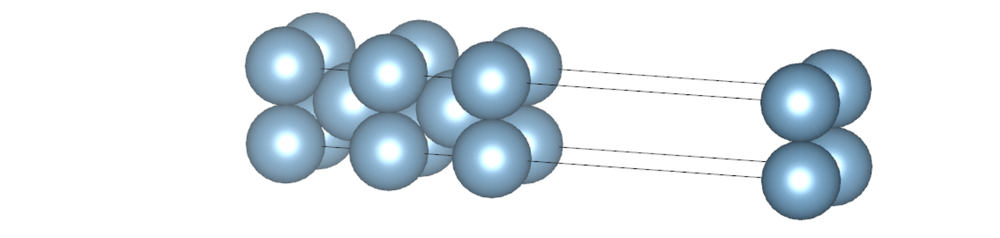
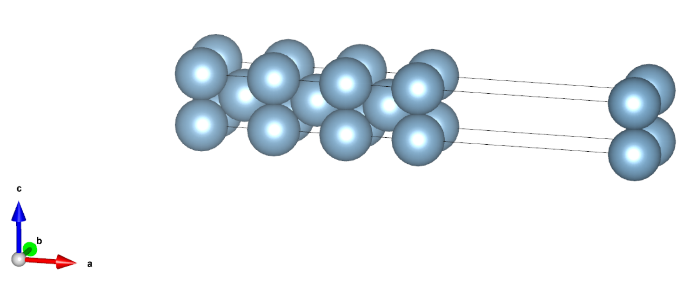
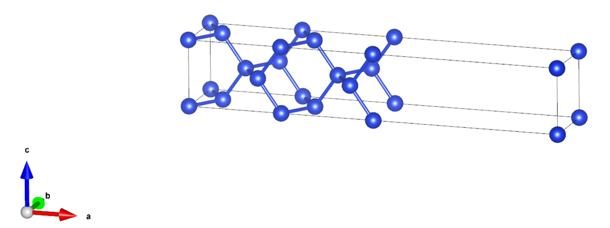

采用 ABACUS 进行表面计算（三）：表面能计算
作者：孙亮，邮箱：l.sun@pku.edu.cn
审核：陈默涵，邮箱：mohanchen@pku.edu.cn
最后更新时间：2023/10/12
一、背景
将某一固体沿着某一晶面方向切开会形成相应的表面，许多化学反应都是依托在一些特定的表面系统上展开的。因此，计算表面能也是第一性原理计算经常会遇见的。
表面能（surface energy）定义为单位面积内表面体系与相应的体材料（bulk systems）能量之差，或者建立某特定表面需要做的功。不同表面的原子排布会对应不同大小的表面能，从能量的观点来看，表面能越低的表面体系越稳定，在现实世界里就越有可能稳定存在。
另外，需要注意的是，当沿着固体的某一晶面切开形成表面时，这个表面不一定是稳定结构。由于表面原子所经历的周围环境相比于体材料有所变化，所以往往表面原子会重新排布，只是排布的幅度有大有小。所以，一般来说，需要对表面进行结构优化计算，达到能量最低的稳定态。有一些常见的表面重构，已经被实验所证实，例如硅的表面重构。
密度泛函理论（Density Functional Theory，简称 DFT）也常用来计算材料体系的表面能，但如果使用的是周期性边界条件，往往构造的原子体系会有两个表面，以及一段真空。注意真空的长度一般不能太小（一般大于 10 埃），要长到能量达到收敛。另外，如果表面是有极化的，可以采用 dipole correction 功能进行修正，这样真空往往可以取短一些。另外一方面，构成表面体系的原子层数一般来讲不少于 3-5 层，有时候需要检验更多层以达到收敛，达到收敛时体系最靠近中间的层一般和体材料的原子性质较为接近，这个可以作为表面厚度是否足够的判据之一，另外一个判据就是随着层数的增加，所得到的表面能的值是否已经收敛。
用 DFT 计算材料体系的表面能时，需要进行两次自洽迭代（self-consistent field，简称 scf）计算，一次用于计算体材料体系中每原子的能量，一次用于计算表面体系的总能量，最终表面能定义为
其中为表面体系包含的原子数，为表面面积，分母上的 来自于如果计算中采用了周期性边界条件，即表面体系实际有上下两个表面。计算表面能时，需要计算和两个能量。ABACUS 软件中，我们可以采用平面波基组、原子轨道基组下的 Kohn-Sham DFT（KSDFT），以及随机波函数密度泛函理论和无轨道密度泛函理论来计算它们。
二、ABACUS 计算表面能具体流程
接下来，我们以平面波基组下的 KSDFT 为例介绍其计算方法，如果需要使用其它的能量求解器，只需要设置 INPUT 文件里的 esolver_type、basis_type 更换能量求解器并设置相应求解器的参数即可。
以下是几个构造表面结构的注意点：
- 由于 ABACUS 在实空间的并行策略是将格点沿 z 轴分层，关于并行我们有两个建议：第一，为了使得 MPI 并行时负载平衡，建议沿 x 方向设置真空，即让表面的法线沿着 x 轴，避免有些核分不到原子，影响计算效率；第二，如果并行的核数较多，建议沿 z 方向设置真空，即让表面的法线沿着 z 轴，因为每个核至少要分到一些 z 方向的格点，选取长边会使得可以并行的核数更多。
- 真空层厚度一般设置在 10 埃以上，具体需要调整真空层厚度做收敛性测试；
- 表面结构（slab）需要用内部的原子模拟体材料，因此其厚度也要做收敛性测试。
1. 铝面心立方晶体(100)表面能计算
算例链接：https://gitee.com/mcresearch/abacus-user-guide/tree/master/examples/surface_energy/Al_fcc100
1.1 计算体材料能量
这一步用晶格弛豫方法找到面心立方晶体 fcc Al 的平衡构型以及平衡能量。
链接：https://gitee.com/mcresearch/abacus-user-guide/tree/master/examples/surface_energy/Al_fcc100/0_bulk
运行完算例后，用 grep FINAL_ETOT_IS OUT.example/running_cell-relax.log 得到总能量为 -1883.225 eV，由于原胞内只有一个原子，因此。
从 OUT.example/STRU_ION_D 文件中可以读到平衡晶格常数为，它将用于表面构型的构造。
注意，如果是带有磁性的原子，计算体材料的时候也要加上磁性的计算，例如在 INPUT 文件里设置 nspin=2。
1.2 计算表面体系能量
这一步我们搭建表面体系并计算其总能量。
实际计算时，需要对表面构型的原子层数做收敛性测试，作为例子，我们提供了 5 层和 7 层的算例，其构型如下所示：


计算总能量时，可以根据实际需要选择是否做结构优化，这里为了结果更准确，同时兼顾效率，我们固定了内部原子，对表面上的原子结构进行了优化。
对于 5 层构型，用 grep FINAL_ETOT_IS OUT.example/running_relax.log 得到总能量为 -9415.005 eV，因此。
对于 7 层构型，总能量。
1.3 计算表面能
对于上述构型，表面面积。
对于 5 层构型，表面构型原子数，因此表面能。
对于 7 层构型，表面构型原子数，因此表面能。
可以看到 7 层的构型相比于 5 层算出的表面能还差别较大，所以需要增加层数一直到表面能收敛。
2. 硅金刚石结构(100)表面能计算
这里金刚石结构我们又名为 CD（Cubid Diamond）结构
算例链接：https://gitee.com/mcresearch/abacus-user-guide/tree/master/examples/surface_energy/Si_CD100
2.1 计算体材料能量
这一步我们用晶格弛豫方法找到 CD Si 的平衡构型以及平衡能量。
链接：https://gitee.com/mcresearch/abacus-user-guide/tree/master/examples/surface_energy/Si_CD100/0_bulk
运行完算例后，用命令
grep FINAL_ETOT_IS OUT.example/running_cell-relax.log
得到体系总能量为 -214.516 eV，由于原胞内有两个原子，因此。
从 OUT.example/STRU_ION_D 文件中可以读到平衡晶格常数为，它将用于表面构型的构造。
2.2 计算表面体系能量
这一步我们搭建表面体系并计算其总能量。
我们搭建了一个 9 层的表面构型，如下图所示：

计算总能量时，可以根据实际需要选择是否做结构优化，这个例子里，为了计算省时，我们没有做结构优化。
用 grep FINAL_ETOT_IS OUT.example/running_scf.log 得到总能量为 -961.337 eV，因此。
2.3 计算表面能
对于上述构型，表面面积，表面构型原子数，因此表面能。
与实验值 [1]非常接近，但略大于另一个实验值[2]。
注：以上为表面能计算示例，若有问题欢迎邮件联系（见上）。
三、参考文献
[1] Eaglesham D J, White A E, Feldman L C, et al. Equilibrium shape of Si[J]. Physical Review Letters, 1993, 70(11): 1643.
[2] Messmer C, Bilello J C. The surface energy of Si, GaAs, and GaP[J]. Journal of Applied Physics, 1981, 52(7): 4623-4629.